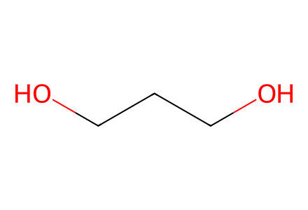
OCCCOSI-only graph candidate. All reaction conditions, procedures, yields and experimental biological data excluded. Ordinary SMILES cannot distinguish source P/M helicity. Upstream stereochemical assignments remain explicitly pending. Three source-drawn connections G24/G25/G26 remain unresolved because named input5 has no verified structure; they are excluded from reaction SMILES and route sequences. Nine paths are evidence-supported fragments and do not bridge these gaps. Facts compiled deterministically; independent review pending.
完整 JSON · 逐步 CSV · 路线序列 · SDF · HRMS 核对
| 事件 | 分子连接 | 报告产率 | Canonical reaction SMILES |
|---|---|---|---|
| G01 | P1 → P2 | not reported | OCCCO>>CC(C)(C)[Si](OCCCO)(c1ccccc1)c1ccccc1 |
| G02 | P2 → P3 | not reported | CC(C)(C)[Si](OCCCO)(c1ccccc1)c1ccccc1>>CC(C)(C)[Si](OCCC=O)(c1ccccc1)c1ccccc1 |
| G03 | P3 + P4 → 11 | not reported | CC(C)(C)[Si](OCCC=O)(c1ccccc1)c1ccccc1.COC(=O)CC(=O)OC>>COC(=O)C(=CCCO[Si](c1ccccc1)(c1ccccc1)C(C)(C)C)C(=O)OC |
| G04 | P5 + P6 → P7 | not reported | CCOC(CCCCl)OCC.Sc1ccccc1>>CCOC(CCCSc1ccccc1)OCC |
| G05 | P7 → 12 | not reported | CCOC(CCCSc1ccccc1)OCC>>O=CCCCSc1ccccc1 |
| G06 | 11 + 12 → 13a-13b | not reported | COC(=O)C(=CCCO[Si](c1ccccc1)(c1ccccc1)C(C)(C)C)C(=O)OC.O=CCCCSc1ccccc1>>COC(=O)C(C(=O)OC)C(CCO[Si](c1ccccc1)(c1ccccc1)C(C)(C)C)C(C=O)CCSc1ccccc1 |
| G07 | 13a-13b → 14a + 14b | not reported | COC(=O)C(C(=O)OC)C(CCO[Si](c1ccccc1)(c1ccccc1)C(C)(C)C)C(C=O)CCSc1ccccc1>>CCOC(OCC)C(CCSc1ccccc1)C(CCO[Si](c1ccccc1)(c1ccccc1)C(C)(C)C)C(C(=O)OC)C(=O)OC.CCOC(OCC)C(CCSc1ccccc1)C(CCO[Si](c1ccccc1)(c1ccccc1)C(C)(C)C)C(C(=O)OC)C(=O)OC |
| G08 | 14a → 15 | not reported | CCOC(OCC)C(CCSc1ccccc1)C(CCO[Si](c1ccccc1)(c1ccccc1)C(C)(C)C)C(C(=O)OC)C(=O)OC>>CCOC(OCC)C(CCS(=O)c1ccccc1)C(CCO[Si](c1ccccc1)(c1ccccc1)C(C)(C)C)C(C(=O)OC)C(=O)OC |
| G09 | 15 → 16 | not reported | CCOC(OCC)C(CCS(=O)c1ccccc1)C(CCO[Si](c1ccccc1)(c1ccccc1)C(C)(C)C)C(C(=O)OC)C(=O)OC>>C=CC(C(CCO[Si](c1ccccc1)(c1ccccc1)C(C)(C)C)CC(=O)OC)C(OCC)OCC |
| G10 | 16 → 10 | not reported | C=CC(C(CCO[Si](c1ccccc1)(c1ccccc1)C(C)(C)C)CC(=O)OC)C(OCC)OCC>>C/C=C(/C=O)C(CCO[Si](c1ccccc1)(c1ccccc1)C(C)(C)C)CC(=O)OC |
| G11 | 10 → 17 | not reported | C/C=C(/C=O)C(CCO[Si](c1ccccc1)(c1ccccc1)C(C)(C)C)CC(=O)OC>>C/C=C(/CO)C(CCO[Si](c1ccccc1)(c1ccccc1)C(C)(C)C)CC(=O)OC |
| G12 | 17 → 18 | not reported | C/C=C(/CO)C(CCO[Si](c1ccccc1)(c1ccccc1)C(C)(C)C)CC(=O)OC>>C/C=C(/COS(C)(=O)=O)C(CCO[Si](c1ccccc1)(c1ccccc1)C(C)(C)C)CC(=O)OC |
| G13 | 18 + 9 → 8 | not reported | C/C=C(/COS(C)(=O)=O)C(CCO[Si](c1ccccc1)(c1ccccc1)C(C)(C)C)CC(=O)OC.NCCc1c[nH]c2ccccc12>>C/C=C1/CN(CCc2c[nH]c3ccccc23)C(=O)CC1CCO[Si](c1ccccc1)(c1ccccc1)C(C)(C)C |
| G14 | 10 + 9 → 8 | not reported | C/C=C(/C=O)C(CCO[Si](c1ccccc1)(c1ccccc1)C(C)(C)C)CC(=O)OC.NCCc1c[nH]c2ccccc12>>C/C=C1/CN(CCc2c[nH]c3ccccc23)C(=O)CC1CCO[Si](c1ccccc1)(c1ccccc1)C(C)(C)C |
| G15 | 8 → 7 + 20 | not reported | C/C=C1/CN(CCc2c[nH]c3ccccc23)C(=O)CC1CCO[Si](c1ccccc1)(c1ccccc1)C(C)(C)C>>C/C=C1/CN2CCc3c([nH]c4ccccc34)[C@@H]2C[C@@H]1CCO[Si](c1ccccc1)(c1ccccc1)C(C)(C)C.C/C=C1/CN2CCc3c([nH]c4ccccc34)[C@H]2C[C@@H]1CCO[Si](c1ccccc1)(c1ccccc1)C(C)(C)C |
| G16 | 7 → 4 | not reported | C/C=C1/CN2CCc3c([nH]c4ccccc34)[C@H]2C[C@@H]1CCO[Si](c1ccccc1)(c1ccccc1)C(C)(C)C>>C/C=C1/CN2CCc3c([nH]c4ccccc34)[C@H]2C[C@@H]1CCO |
| G17 | 20 → 3 | not reported | C/C=C1/CN2CCc3c([nH]c4ccccc34)[C@@H]2C[C@@H]1CCO[Si](c1ccccc1)(c1ccccc1)C(C)(C)C>>C/C=C1/CN2CCc3c([nH]c4ccccc34)[C@@H]2C[C@@H]1CCO |
| G18 | 7 → 21 | not reported | C/C=C1/CN2CCc3c([nH]c4ccccc34)[C@H]2C[C@@H]1CCO[Si](c1ccccc1)(c1ccccc1)C(C)(C)C>>C/C=C1/CN2CCc3c([nH]c4ccc(Br)cc34)[C@H]2C[C@@H]1CCO[Si](c1ccccc1)(c1ccccc1)C(C)(C)C |
| G19 | 21 → 22 | not reported | C/C=C1/CN2CCc3c([nH]c4ccc(Br)cc34)[C@H]2C[C@@H]1CCO[Si](c1ccccc1)(c1ccccc1)C(C)(C)C>>C/C=C1/CN2CCc3c([nH]c4ccc(B5OC(C)(C)C(C)(C)O5)cc34)[C@H]2C[C@@H]1CCO[Si](c1ccccc1)(c1ccccc1)C(C)(C)C |
| G20 | 22 → 23 | not reported | C/C=C1/CN2CCc3c([nH]c4ccc(B5OC(C)(C)C(C)(C)O5)cc34)[C@H]2C[C@@H]1CCO[Si](c1ccccc1)(c1ccccc1)C(C)(C)C>>C/C=C1/CN2CCc3c([nH]c4ccc(O)cc34)[C@H]2C[C@@H]1CCO[Si](c1ccccc1)(c1ccccc1)C(C)(C)C |
| G21 | 10 + serotonin → 24 | not reported | C/C=C(/C=O)C(CCO[Si](c1ccccc1)(c1ccccc1)C(C)(C)C)CC(=O)OC.NCCc1c[nH]c2ccc(O)cc12>>C/C=C1/CN(CCc2c[nH]c3ccc(O)cc23)C(=O)CC1CCO[Si](c1ccccc1)(c1ccccc1)C(C)(C)C |
| G22 | 24 → 23 | not reported | C/C=C1/CN(CCc2c[nH]c3ccc(O)cc23)C(=O)CC1CCO[Si](c1ccccc1)(c1ccccc1)C(C)(C)C>>C/C=C1/CN2CCc3c([nH]c4ccc(O)cc34)[C@H]2C[C@@H]1CCO[Si](c1ccccc1)(c1ccccc1)C(C)(C)C |
| G23 | 23 → 6 + 25 | not reported | C/C=C1/CN2CCc3c([nH]c4ccc(O)cc34)[C@H]2C[C@@H]1CCO[Si](c1ccccc1)(c1ccccc1)C(C)(C)C>>C/C=C1/C[N@+]2(C)CCc3c([nH]c4ccc(O)cc34)[C@H]2C[C@@H]1CCO[Si](c1ccccc1)(c1ccccc1)C(C)(C)C.C/C=C1/C[N@@+]2(C)CCc3c([nH]c4ccc(O)cc34)[C@H]2C[C@@H]1CCO[Si](c1ccccc1)(c1ccccc1)C(C)(C)C |
| G27 | 29 → 2 + 27 + 30 | not reported | C/C=C1/CN2CCc3c([nH]c4ccc(O)c([C@H]5C[C@@]6(CC)CCCN7CCc8c(n5c5ccccc85)[C@H]76)c34)[C@H]2C[C@@H]1CCO>>C/C=C1/C[N@+]2(C)CCc3c([nH]c4ccc(O)c([C@H]5C[C@@]6(CC)CCCN7CCc8c(n5c5ccccc85)[C@H]76)c34)[C@H]2C[C@@H]1CCO.C/C=C1/C[N@+]2(C)CCc3c([nH]c4ccc(O)c([C@H]5C[C@@]6(CC)CCC[N+]7(C)CCc8c(n5c5ccccc85)[C@@H]67)c34)[C@H]2C[C@@H]1CCO.C/C=C1/C[N@@+]2(C)CCc3c([nH]c4ccc(O)c([C@H]5C[C@@]6(CC)CCCN7CCc8c(n5c5ccccc85)[C@H]76)c34)[C@H]2C[C@@H]1CCO |
| G28 | 28 → 1 + 26 + 31 | not reported | C/C=C1/CN2CCc3c([nH]c4ccc(O)c([C@H]5C[C@@]6(CC)CCCN7CCc8c(n5c5ccccc85)[C@H]76)c34)[C@H]2C[C@@H]1CCO>>C/C=C1/C[N@+]2(C)CCc3c([nH]c4ccc(O)c([C@H]5C[C@@]6(CC)CCCN7CCc8c(n5c5ccccc85)[C@H]76)c34)[C@H]2C[C@@H]1CCO.C/C=C1/C[N@+]2(C)CCc3c([nH]c4ccc(O)c([C@H]5C[C@@]6(CC)CCC[N+]7(C)CCc8c(n5c5ccccc85)[C@@H]67)c34)[C@H]2C[C@@H]1CCO.C/C=C1/C[N@@+]2(C)CCc3c([nH]c4ccc(O)c([C@H]5C[C@@]6(CC)CCCN7CCc8c(n5c5ccccc85)[C@H]76)c34)[C@H]2C[C@@H]1CCO |

OCCCO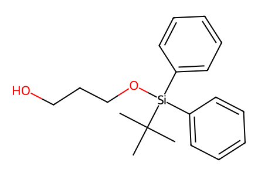
CC(C)(C)[Si](OCCCO)(c1ccccc1)c1ccccc1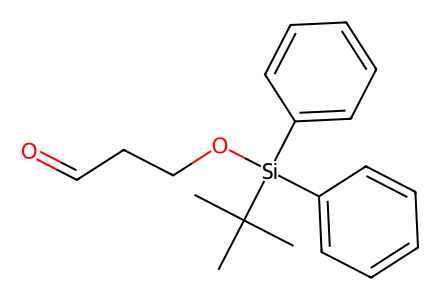
CC(C)(C)[Si](OCCC=O)(c1ccccc1)c1ccccc1
COC(=O)CC(=O)OC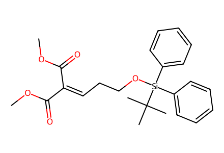
COC(=O)C(=CCCO[Si](c1ccccc1)(c1ccccc1)C(C)(C)C)C(=O)OC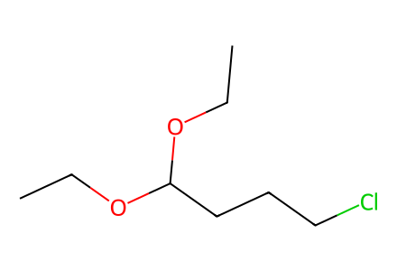
CCOC(CCCCl)OCC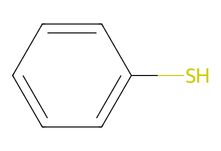
Sc1ccccc1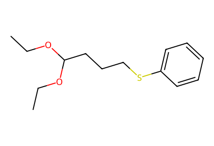
CCOC(CCCSc1ccccc1)OCC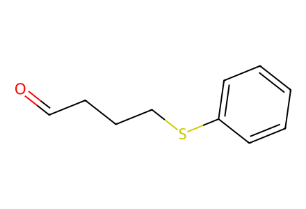
O=CCCCSc1ccccc1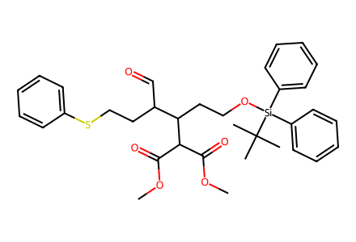
COC(=O)C(C(=O)OC)C(CCO[Si](c1ccccc1)(c1ccccc1)C(C)(C)C)C(C=O)CCSc1ccccc1
CCOC(OCC)C(CCSc1ccccc1)C(CCO[Si](c1ccccc1)(c1ccccc1)C(C)(C)C)C(C(=O)OC)C(=O)OC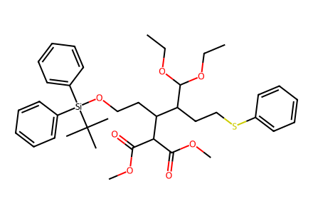
CCOC(OCC)C(CCSc1ccccc1)C(CCO[Si](c1ccccc1)(c1ccccc1)C(C)(C)C)C(C(=O)OC)C(=O)OC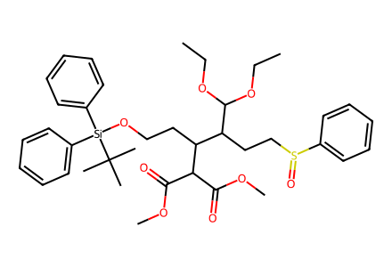
CCOC(OCC)C(CCS(=O)c1ccccc1)C(CCO[Si](c1ccccc1)(c1ccccc1)C(C)(C)C)C(C(=O)OC)C(=O)OC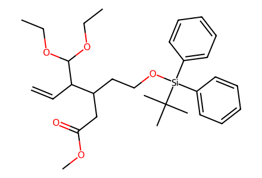
C=CC(C(CCO[Si](c1ccccc1)(c1ccccc1)C(C)(C)C)CC(=O)OC)C(OCC)OCC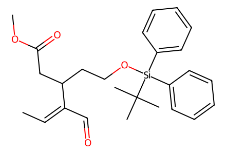
C/C=C(/C=O)C(CCO[Si](c1ccccc1)(c1ccccc1)C(C)(C)C)CC(=O)OC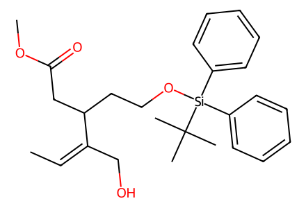
C/C=C(/CO)C(CCO[Si](c1ccccc1)(c1ccccc1)C(C)(C)C)CC(=O)OC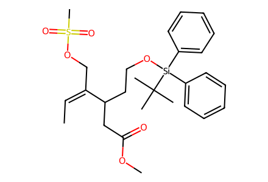
C/C=C(/COS(C)(=O)=O)C(CCO[Si](c1ccccc1)(c1ccccc1)C(C)(C)C)CC(=O)OC
NCCc1c[nH]c2ccccc12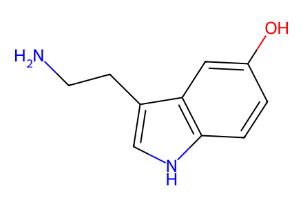
NCCc1c[nH]c2ccc(O)cc12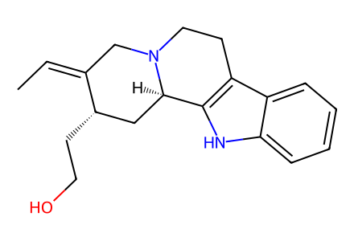
C/C=C1/CN2CCc3c([nH]c4ccccc34)[C@H]2C[C@@H]1CCO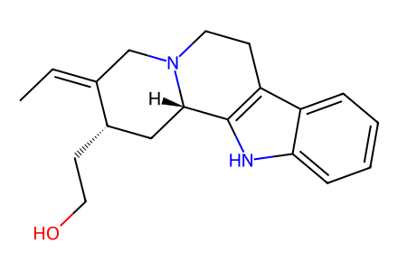
C/C=C1/CN2CCc3c([nH]c4ccccc34)[C@@H]2C[C@@H]1CCO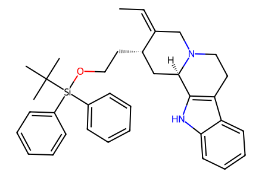
C/C=C1/CN2CCc3c([nH]c4ccccc34)[C@H]2C[C@@H]1CCO[Si](c1ccccc1)(c1ccccc1)C(C)(C)C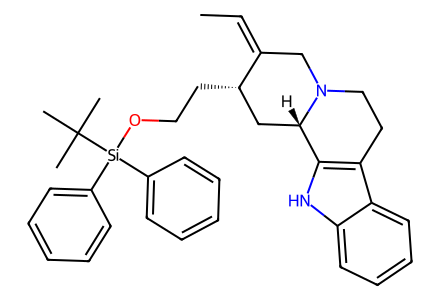
C/C=C1/CN2CCc3c([nH]c4ccccc34)[C@@H]2C[C@@H]1CCO[Si](c1ccccc1)(c1ccccc1)C(C)(C)C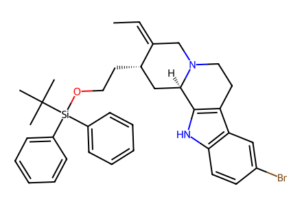
C/C=C1/CN2CCc3c([nH]c4ccc(Br)cc34)[C@H]2C[C@@H]1CCO[Si](c1ccccc1)(c1ccccc1)C(C)(C)C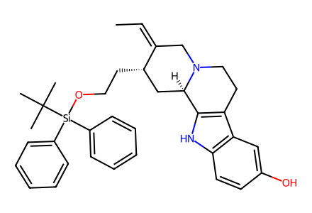
C/C=C1/CN2CCc3c([nH]c4ccc(O)cc34)[C@H]2C[C@@H]1CCO[Si](c1ccccc1)(c1ccccc1)C(C)(C)C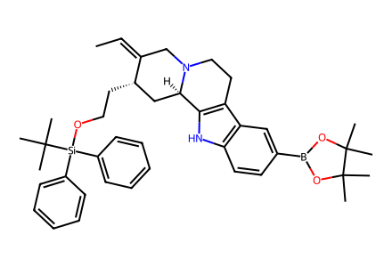
C/C=C1/CN2CCc3c([nH]c4ccc(B5OC(C)(C)C(C)(C)O5)cc34)[C@H]2C[C@@H]1CCO[Si](c1ccccc1)(c1ccccc1)C(C)(C)C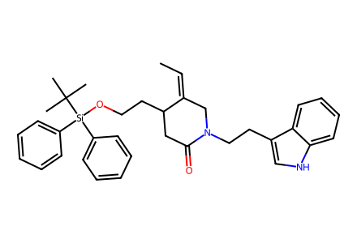
C/C=C1/CN(CCc2c[nH]c3ccccc23)C(=O)CC1CCO[Si](c1ccccc1)(c1ccccc1)C(C)(C)C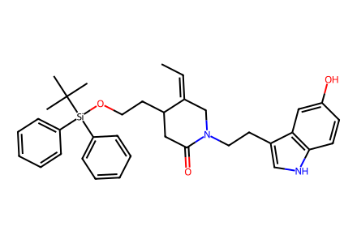
C/C=C1/CN(CCc2c[nH]c3ccc(O)cc23)C(=O)CC1CCO[Si](c1ccccc1)(c1ccccc1)C(C)(C)C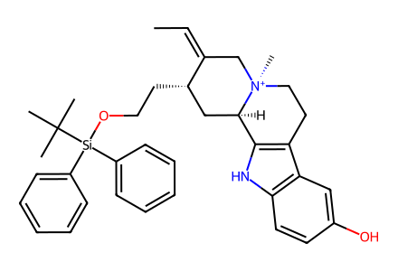
C/C=C1/C[N@@+]2(C)CCc3c([nH]c4ccc(O)cc34)[C@H]2C[C@@H]1CCO[Si](c1ccccc1)(c1ccccc1)C(C)(C)C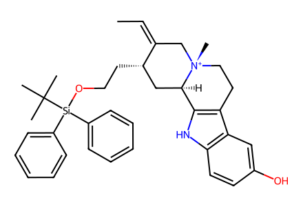
C/C=C1/C[N@+]2(C)CCc3c([nH]c4ccc(O)cc34)[C@H]2C[C@@H]1CCO[Si](c1ccccc1)(c1ccccc1)C(C)(C)C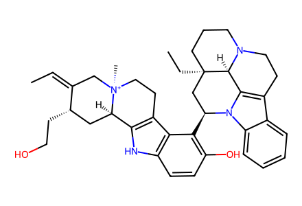
C/C=C1/C[N@@+]2(C)CCc3c([nH]c4ccc(O)c([C@H]5C[C@@]6(CC)CCCN7CCc8c(n5c5ccccc85)[C@H]76)c34)[C@H]2C[C@@H]1CCO
C/C=C1/C[N@@+]2(C)CCc3c([nH]c4ccc(O)c([C@H]5C[C@@]6(CC)CCCN7CCc8c(n5c5ccccc85)[C@H]76)c34)[C@H]2C[C@@H]1CCO
C/C=C1/C[N@+]2(C)CCc3c([nH]c4ccc(O)c([C@H]5C[C@@]6(CC)CCCN7CCc8c(n5c5ccccc85)[C@H]76)c34)[C@H]2C[C@@H]1CCO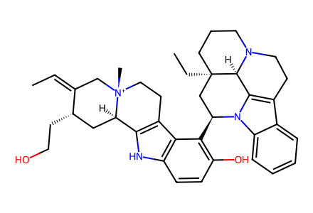
C/C=C1/C[N@+]2(C)CCc3c([nH]c4ccc(O)c([C@H]5C[C@@]6(CC)CCCN7CCc8c(n5c5ccccc85)[C@H]76)c34)[C@H]2C[C@@H]1CCO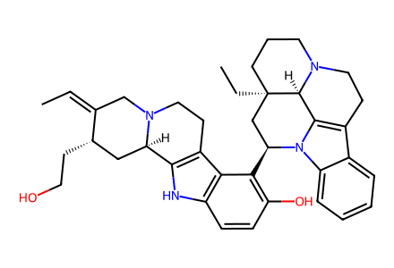
C/C=C1/CN2CCc3c([nH]c4ccc(O)c([C@H]5C[C@@]6(CC)CCCN7CCc8c(n5c5ccccc85)[C@H]76)c34)[C@H]2C[C@@H]1CCO
C/C=C1/CN2CCc3c([nH]c4ccc(O)c([C@H]5C[C@@]6(CC)CCCN7CCc8c(n5c5ccccc85)[C@H]76)c34)[C@H]2C[C@@H]1CCO
C/C=C1/C[N@+]2(C)CCc3c([nH]c4ccc(O)c([C@H]5C[C@@]6(CC)CCC[N+]7(C)CCc8c(n5c5ccccc85)[C@@H]67)c34)[C@H]2C[C@@H]1CCO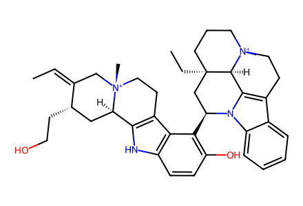
C/C=C1/C[N@+]2(C)CCc3c([nH]c4ccc(O)c([C@H]5C[C@@]6(CC)CCC[N+]7(C)CCc8c(n5c5ccccc85)[C@@H]67)c34)[C@H]2C[C@@H]1CCO